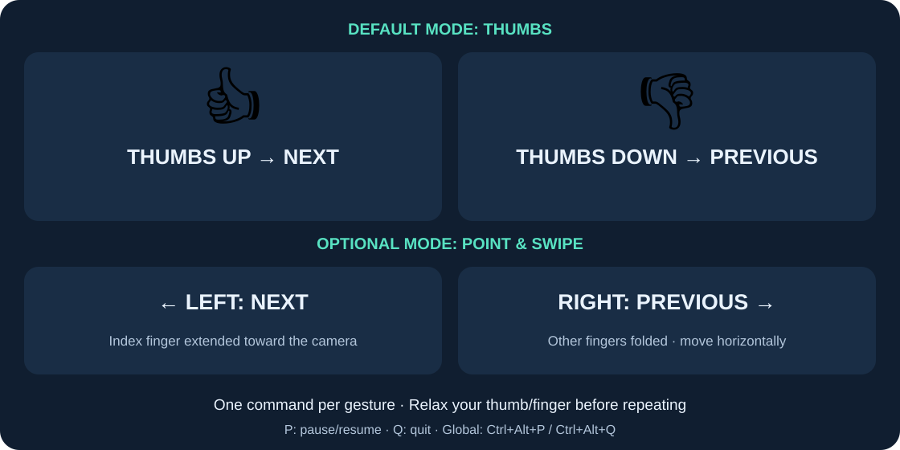

Your hand.
Your next slide.
Open one palm and swipe to control your presentation or PDF. Everything runs on your computer.
Windows 10/11 x64No Python installationWorks offline
A folder, not an installer
- Download PPhandcontrol-windows-x64.zip from the official repository's Releases page.
- Right-click → Extract All. Keep every extracted file and folder together.
- Open PPhandcontrol.exe. It starts paused.
- Select your camera and leave sensitivity at Medium for your first try.
Give your slides the focus
- Select the matching navigation profile using the table below.
- Open your slides or PDF. Start slideshow, fullscreen, or single-page mode.
- Click the slide/page area, outside menus and text boxes.
- Press Ctrl + Alt + P to resume without switching windows.
Open. Hold. Swipe.
- Face one open palm toward the camera with every finger visible. Hold it still briefly.
- Move left in the mirrored preview for Next; move right for Previous.
- Wait for the 0.8-second cooldown, then hold still to rearm.
- Close your palm while moving back to the starting position; open and hold still before the next swipe.
Pause whenever you need
Ctrl + Alt + P pauses/resumes anywhere.
Ctrl + Alt + Q quits anywhere.
P and Q also work while the app window has focus, alongside its buttons.
Minimize the app after setup. Tracking continues, and your presentation keeps focus.
Choose the right profile
| Profile | Keyboard commands | Prepare the viewer |
|---|---|---|
| PowerPoint / Google Slides | Right / Left arrow | Start Slideshow and focus the slide. PowerPoint advances normal animation steps. |
| Adobe Acrobat / Reader | Ctrl+PageDown / Ctrl+PageUp | Focus the PDF page. Fullscreen helps. |
| SumatraPDF | PageDown / PageUp | Use single-page or presentation mode and focus the document. |
Keys go to whichever application has focus. Browser PDF viewers are outside guaranteed first-release compatibility. A viewer running as administrator can block incoming keys.
Make tracking reliable
- Use even lighting and show the whole hand.
- Keep one open palm in view and swipe mostly horizontally.
- Choose Low sensitivity for a larger required swipe, High for a smaller one.
- Pause during unrelated hand movements.
- Tracking loss clears old motion. Hold still again after re-entry.
If something stops working
- No camera: check Windows camera privacy settings, close video-call apps, or choose another camera.
- No slide change: focus the viewer's page area and check the profile.
- No global shortcut: another program may already own it. Use the app buttons or focused P/Q controls.
- Camera disconnected: navigation pauses. Reconnect/retry, then resume.